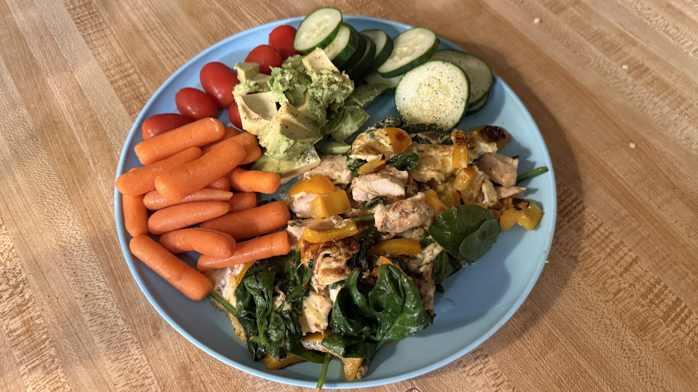

Featured Boat
Teki Malo
1988 Tayana 37 Cutter · Río Dulce, Guatemala
Currently in pursuit — a classic cruiser for live-aboard life on the Sweet River.
Building a home that sails. Live-aboard practice, seamanship, and the quiet work of a life on the water.
Read the Journal →
1988 Tayana 37 Cutter · Río Dulce, Guatemala
Currently in pursuit — a classic cruiser for live-aboard life on the Sweet River.

Quiet mornings, one-pan meals, and the rhythm of life afloat.
View Galley Notes →About
This site documents the practice of living on a boat: the vessel, the systems, the galley, and the passages.
I bring a background in sales leadership, technology, and entrepreneurship. The focus here is on current practice—what is being built, refined, and learned in real time on the water.
Journal
Months of research, inspections, and decisions in the search for a boat to live aboard and sail mostly solo.
Galley · Kitchen LogA living record of simple plates, ingredients, and everyday notes from the galley.
Sailing · JourneyVision, boat research, preparation stages, and the roadmap toward offshore passages.
Contact